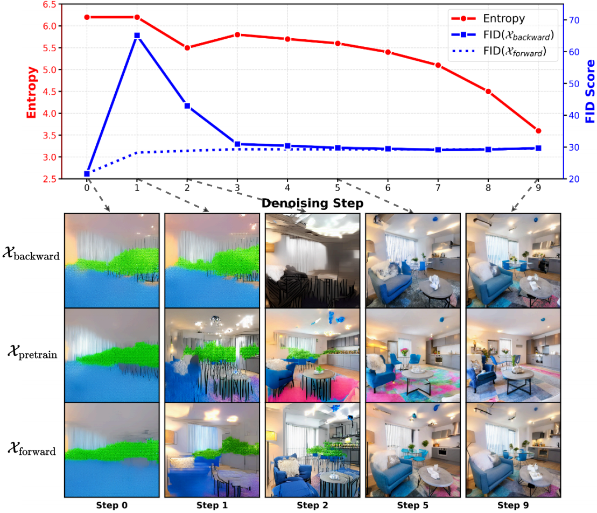

We conduct a detailed analysis of the instability caused by the conventional use of intermediate samples and backward trajectories. Based on this analysis, we motivate a unified design that instead relies on the final clean sample and the forward trajectory, leading to more stable and consistent optimization.